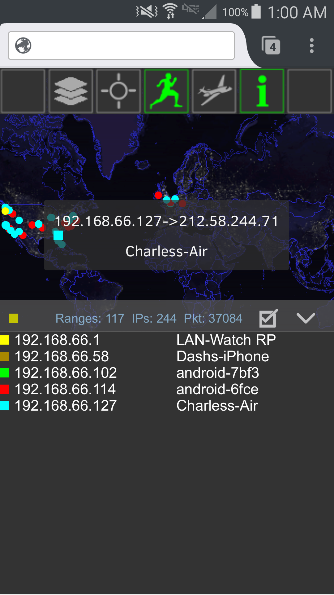
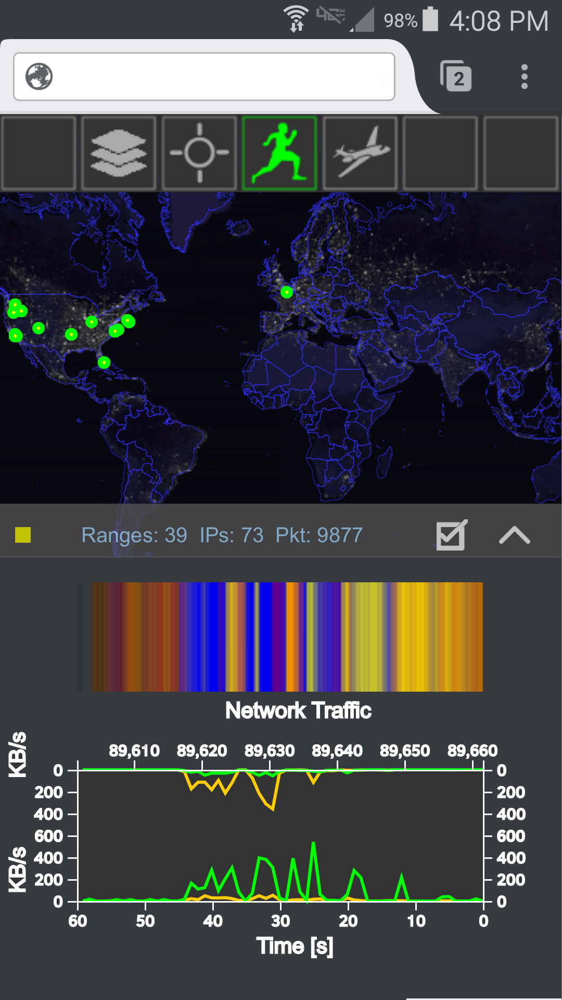
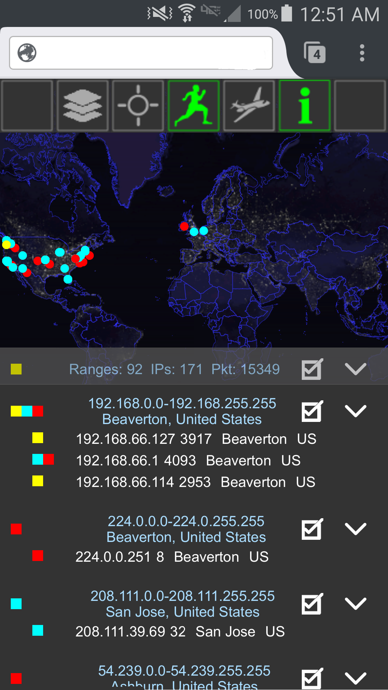

|  |  |  |
Python <- {JSON} -> Django <- {JSON} -> JavaScript
Daemon <- RPC -> Server <- AJAX -> Webpage
py-rpc <- -> py-rpc
Q: When is this useful?
"""
Python version of "UNIX double-fork magic" , see Stevens' "Advanced
Programming in the UNIX Environment" for details (ISBN 0201563177)
http://www.erlenstar.demon.co.uk/unix/faq_2.html#SEC16
"""
#Fork own process
pid = os.fork()
#Exit first parent
if pid > 0:sys.exit(0)
#Decouple from parent environment
os.chdir("/")
os.setsid()#creates a new session
os.umask(0)#subsquent permissions
#Do second fork
pid = os.fork()
#Exit from second parent
if pid > 0:sys.exit(0)
"""
In addition to its data collection threads
have that daemon run an XMLRPCServer ...
"""
from xmlrpc.server import SimpleXMLRPCServer
class DaemonProcess(Daemon):
def __init__(self):
Daemon.__init__(self)
def get_data(self,client_ip):
rval={...}
return rval
def run(self):
self.server=SimpleXMLRPCServer((HOSTNAME,8005))
self.server.register_introspection_functions()
self.server.register_instance(self)
self.server.serve_forever()
if __name__=="__main__":
daemon=DaemonProcess()
daemon.start()
"""
And now your Django-Python web server can
talk to your daemon via Python-RPC on both
sides. Here is such a Django view:
"""
from django.http import HttpResponse
import json, xmlrpc.client
def my_view(request):
rval={}
s=xmlrpc.client.Server("http://spytools.asymptopia.org:8005")
rval['data']=s.get_data((client_ip))
return HttpResponse(json.dumps(rval));
"""
The JSON data is returned to the webpage that requested it
"""
script type="javascript"
var xajax=function(what){
var xhr=new_xhr();
xhr.onreadystatechange=function(){
if(xhr.readyState==4){
if(xhr.status==200){
//console.log(what+" returned "+xhr.responseText);
}
}
}
xhr.open('Get',server_hostname+"/get?"+what,true);
xhr.setRequestHeader("Content-type", "application/x-www-form-urlencoded");
xhr.send("");
}
script
| *Call Attention To This* |
Resources:D3js, Open layers, GeoIPwww.asymptopia.org ccosse@gmail.com Python version of "UNIX double-fork magic" , see Stevens' "Advanced Programming in the UNIX Environment" for details (ISBN 0201563177) http://www.erlenstar.demon.co.uk/unix/faq_2.html#SEC16 |